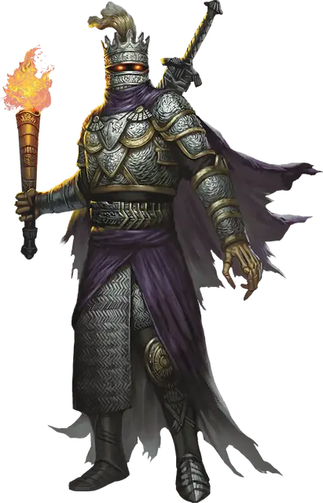

Рыцарь смерти
Death Knight
Средняя или Маленькая Нежить, Хаотичная Злая

Класс Защиты 20 Инициатива +12 (22)
Хиты 199 (21к8 + 105)
Скорость 30 футов
| мод | спас | ||
|---|---|---|---|
| СИЛ | 20 | +5 | +5 |
| ЛОВ | 11 | +0 | +6 |
| ТЕЛ | 20 | +5 | +5 |
| мод | спас | ||
|---|---|---|---|
| ИНТ | 12 | +1 | +1 |
| МДР | 16 | +3 | +9 |
| ХАР | 18 | +4 | +4 |
Иммунитеты Некротический, Яд; Испуганный, Истощение, Отравленный
Чувства Тёмное зрение 120 футов, пассивное Восприятие 13
Языки Общий, Бездны
Опасность 17 (18 000 опыта; БВ +6)
Особенности
Легендарное сопротивление (3/день). Если рыцарь смерти проваливает спасбросок, он вместо этого может в нём преуспеть.
Сопротивление магии. Рыцарь смерти совершает с Преимуществом спасброски от заклинаний и прочих магических эффектов.
Военачальник нежити. Существа типа Нежить по выбору рыцаря смерти (исключая его самого) в 60-футовой Эманации, исходящей от него, совершают с Преимуществом броски атаки и спасброски. Он не может пользоваться этой особенностью, если Недееспособен.
Восстановление нежити. Если рыцарь смерти уничтожен прежде, чем искупит свои злодеяния, спустя 1к10 дней он получает новое тело и воскресает со всеми своими Хитами. Новое тело появляется в месте, значимом для рыцаря смерти.
Действия
Мультиатака. Рыцарь смерти совершает три атаки Клинком ужаса.
Клинок ужаса. Бросок рукопашной атаки: +11, досягаемость 5 фт. Попадание: 12 (2к6 + 5) Рубящего урона плюс 13 (3к8) Некротического урона.
Сфера адского пламени (Перезарядка 5–6). Спасбросок Ловкости: Сл 18, каждое существо в 20-футовой Сфере с центром в видимой рыцарем смерти точке в пределах 120 футов. Провал: 35 (10к6) урона Огнём плюс 35 (10к6) Некротического урона. Успех: Только половина урона.
Сотворение заклинаний. Рыцарь смерти сотворяет одно из следующих заклинаний, не нуждаясь в Материальных компонентах (заклинательная характеристика — Харизма, Сл спасброска заклинаний 18):
Неограниченно: Призрачный скакун, Приказ
2/день каждое: Разрушительная волна, Рассеивание магии
Реакции
Парирование. Условие: По рыцарю смерти попали броском рукопашной атакой, пока он держит оружие. Эффект: Рыцарь смерти получает бонус +6 к КЗ против этой атаки, что может привести к её промаху.
Легендарные действия
У этого существа есть 3 использования Легендарных действий; оно может немедленно после окончания хода другого существа потратить одно использование, чтобы совершить одно из следующих действий. Существо восполняет все потраченные использования в начале каждого своего хода.
Веление ужаса. Рыцарь смерти использует Сотворение заклинаний (Приказ). Рыцарь смерти не может совершить это действие повторно до начала своего следующего хода.
Нечестивое слово. Спасбросок Телосложения: Сл 18, одно видимое рыцарем смерти существо в пределах 120 футов. Провал: 17 (5к6) Некротического урона, и максимум Хитов цели снижается на число, равное полученному урону. Провал или успех: Рыцарь смерти не может совершить это действие повторно до начала своего следующего хода.
Выпад. Рыцарь смерти перемещается на расстояние вплоть до половины своей Скорости и совершает одну атаку Клинком ужаса.
Бонус мастерства +6
Среда обитания Любая
Сокровища Оружейные
Рыцари смерти
Терзаемые полководцы немёртвых легионов
Поборники зла, рыцари смерти — это закованные в латы скелетообразные военачальники. Сочетая сокрушительную боевую мощь и богохульное колдовство, эти бессмертные тираны ведут нечестивые легионы против живых либо веками вынашивают злобу в стенах проклятых цитаделей. Каждого рыцаря смерти преследует бремя трагедии и бесчестья, что толкает его на свершение ещё более чудовищных злодеяний.
Рыцари смерти — смертоносные бойцы и деспотичные командиры с мрачным прошлым. Иные из них стремятся разорвать путы проклятия, обрёкшего их на нежизнь, однако их себялюбивые души навеки прикованы к этой горькой участи. Другие же — подобно печально известному лорду Соту — столетиями терзаются мыслями в скорбных руинах, пребывая в бездействии, пока нечто вновь не разожжёт их бессмертную злобу.